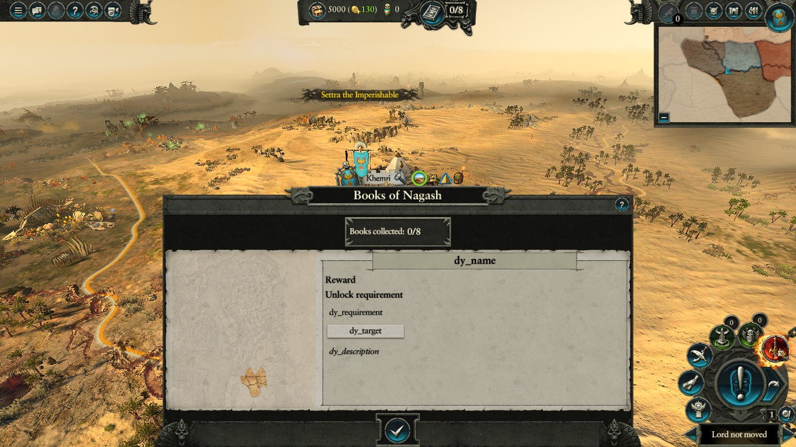

Mod Troubleshooting Guide
This is a troubleshooting guide for mod users in TW: Warhammer 2. The generic pointers should be valid for all recent TW games. - Your neighbourhood Cataph
Managing Mods
So, you have subscribed to mods on the workshop. You now open CA's current mod manager (hereby called George II) and - they don't work. We called it George II cause it's the new launcher. He's new in town, prettier than George, but he's still not good at what he should be doing and forgets to make mods work. We're sorry but George II needs some time.
If mods appear to not work, check the support pages about it. If that doesn't work, which is feasible, the standing recommendation is to rollback to George I (game properties> betas> launcher_release_candidate). George I is faulty as well but slightly more reliable.
[disregard all of the above right now (during P&W dlc release), they're both bugged more than before; this is basically a "shut up and use KMM"]
Even better, just use the community mod manager (hereby called KMM). Long story short, George is unwieldy and has grown responsible for a lot of issues of its own, becoming hated by modders and users alike. Among other things, KMM can launch the game without even bothering George.
One of the things George I cannot do is let you change load order because it only uses the default alphabetical order. KMM and even George II have that function, so sometimes you'd be tempted to change load order manually, right? WRONG. The truth is that compatibility-minded modders already handle load order on their own as far as possible. Manually changing load order may do absolutely nothing or break everything. Some context. There are six main possible categories of folders in a mod pack and this is how they handle load order, either through actual pack name or table name:
- Db: table name.
- Scripts: pack name.
- Startpos: the big bad, pack name.
- Text: table name.
- UI: pack name.
- Variants: pack name.
And that is if the modder doesn't redirect content. KMM can only affect pack name order, so there are things like balance submods (Db overrides) that are still completely in the hands of the modders and intentionally so.
In other words, there are only two possible cases in which you may want to alter load order manually: UI and variants, basically if you want to use specific reskin B.pack in the midst of larger reskin A.pack, in which case you push B on top.
You DON'T WANT to change script or startpos load order, because bad stuff happens. For example, the Community Modding Framework, aka bunch of script hooks, should always be LAST or you'll break things.
In conclusion, you want to follow KMM's instructions, give Steam time to download/remove mods and mostly keep load order in an alphabetical fashion (e.g. order by name and save profile), especially after adding new mods.
Which, incidentally, is this: ! # $ % & ' ( ) + , - ; = @ 0-9 a-z [ ] ^ _ ` { } ~ Where "!" wins over "a".
Common Troubleshooting
In an efficient mod, at least half of the reported issues are down to user error or what is technically called launcher f***-up. We’re going to try and cut that amount down for the greater good.
Most common user mistakes:
- Not reading the mod description. Seriously, it’s there for a reason. The modder took time to write it and it’s downright disrespectful to ignore it. Some mods will also have FAQs or a list of known issues and instructions.
- Ignoring the required items. Ditto. The mod may show you a popup upon subscribing, disregarding that is almost always cue for disaster. This popup is not shown when subbing from a Steam collection, so actually check the mod’s page.
- Mixing up incompatible mods. Too often, some users will make the said mistakes and just subscribe. The most common example is using two startpos mods at the same time, or two overhauls. Don’t do that. If in doubt, read the description again or ask the modder in a comment.
- Not providing details upon reporting an issue. Ok, you did everything right but that ugly bug is still there. That’s fine. The worst thing you could do at this point is comment "mod doesn’t work" because that means absolutely nothing.
Your comment for the modder should include as many as possible of the following:
- Context: when and how the thing happened. E.g. during the interturn after X’s turn, or clicking this button, whether it was Vortex/ME/multiplayer, custom battle or campaign battle.
- Mod list: always tell if you have other mods up and which ones, we see people somehow not mention that they were using a total overhaul, and that’s kind of a huge deal. Do not skip on certain mods because you think they can’t be the culprit. Linking a collection is the handiest method you have.
- Screenshot: always helps, it can at least show the context.
- Save game: if requested, you can find your save game in (example) C:\Users%USER%\AppData\Roaming\The Creative Assembly\Warhammer2\save_games. Remember the mod list, because the modder may not be able to load without it.
And not to do:
- The Hit & Run: if you comment about an issue but then solve it on your own, let the modder know. Sometimes people just report a problem and disappear.
- Ignoring previous comments: the answer to your problem may lie as far as two comments below. If any, look for the FAQs as well.
This list is of course not meant to insult anybody’s intelligence, but you’d be surprised at how many issues and massive wastes of time are due to neglect of these simple rules. Following them is in the user’s interest in order to find a solution sooner, and it will allow the modder more time for improvement rather than wasted in unnecessary bug-hunts.
Most common launcher or game issues (with either George I or George II):
- Failed to download/remove mod. This happens relatively often and if in doubt you should always check in the mod download folder (example: Z:\Steam\steamapps\workshop\content\594570??????) whether that mod was successfully downloaded/removed. Open George/Steam again until it is. The final folder id is the same as the one on the mod’s Steam url and you can sort by date for the most recently poked folder.
- More on this if using KMM: Kaedrin’s manager moves active mod packs back to the data folder. Moreover, when mods update you will likely need to refresh/restart KMM. Most people will be using the Skip Intros mod, and if the game starts without loading it it’s an easy symptom something didn’t reload correctly. If you get that or suddenly crash for no good reason, just refresh/restart KMM first thing!
- Ghost mods. Definitely spooky. You have toggled off that mod, but somehow it turns out it was still being loaded and crashing your game. Or a mod updates and self-enables. Using KMM seems enough to prevent this kind of poltergeist.
- Corrupted download. This is something that has been happening increasingly over time. The mod’s download is botched and it either crashes the game or presents less visible problems (e.g.: this lord’s graphics are wrong/missing). Go again in your content or data folder, delete the mod pack and let George download it again. In theory, you should do this every time a mod that is clearly not supposed to do that crashes on game start, especially when the mod hasn’t been updated recently and nobody has reported such a glaring problem in a while.
- Random crashes: sometimes stuff just breaks and you have to verify your game’s cache: Steam Library>right click on game>Properties>Local Files>Verify yadda yadda. Or check with the game’s support.
- THE DREADED DURTHU BUG: once upon a time, a bug with Durthu’s Lamentation ability rampaged through the workshop, mods being blamed without anybody being able to find a culprit. Eventually, it turned out that it was a vanilla bug that only popped up when certain mods were around and yes, I’m serious. Any similar glitch may be now affectionately dubbed Durthu by modders. The user can do nothing about it but just keep in mind, for giggles, that sometimes this sort of thing happens and this is when modders grow white hair in digging through their innocent mods. Probably karma for the analogous reports CA get for mod-originated bugs.
- Can only do one thing at a time, guv: new bug introduced with the lizard&rat DLC, supposedly to be fixed asap cause it breaks the new launchers on most cases. Basically only one mod is loaded at any time. I don’t have to specify how bad that is. Just use KMM.
Most common KMM issues:
- Doesn’t work: KMM can be installed anywhere, BUT in the game’s stuff. Don’t install in data/ or anywhere close. Hell, plop it in the desktop.
- Doesn’t work cause I’m pirating the game: KMM can smell piracy. Buy the game.
- Freeze on start: try again.
- DLC not found: I don’t know the specifics but 1.8.6 should fix that from .4. If it doesn’t, Detect installs again. Past that, report to Kaedrin with what he needs or rollback to the .2.
APPENDIX: Trimming the Mod List
You should always keep in mind that even if the mod list is technically sound there is always a background mod limit of unknown entity. Long story short, beyond 40 mods you’re potentially flirting with disaster because risk of incompatibility increases and the game may simply throw more random problems and crashes, or just plain balance issues. At 70ish, you surely have something wrong going on somewhere. As a rule of thumb, try not to overload it. No, don’t assemble and publish a bunch of mods, that kind of thing is terribly dangerous and bad for a variety of reasons. We’ll go more in-depth about this another time.
Finding the culprit
The other problem with large mod lists is this: bad, I got a crash; worse, which one of the N mods I have is the culprit?
Generic pointers:
- Pure Text, Variant and UI mods can NEVER crash the game for the user. If they do, it’s a botched download.
- Sort by date either on KMM or George to find the most recent updates, if you didn’t add additional mods those may be responsible.
- If you had the issue during a campaign, do not remove mods that have custom items, units or buildings because you’re just going to crash harder if they are around in the campaign map.
One of the things you should try upon encountering a reproducible crash is to toggle off all mods from the ground up by loading the bare minimum to make that mod work, for example loading only the Unlocker+ and CMF. And up from there, adding one or small groups of mods at a time until you can reproduce the issue. Keep in mind mod requirements while you do this.
It’s patient work but the modder will appreciate it. Remember: a happy modder is a happy user.
APPENDIX: Scripts
Scripts are being increasingly used by mods. Scripters are getting smarter by the day to maintain compatibility, but some mods still require frameworks like CMF or UIMF (we’ll read about them later).
You may encounter symptoms of broken scripts, due to botched downloads, bad compatibility, lack of CMF/UIMF or just plain unforeseen issues because we can just mess stuff up sometimes. Script glitches tend to be quite tricky.
How to recognize broken scripts:
- Rites button on a faction that shouldn’t have that.
- You’re playing Tomb Kings or a modded faction and you see foreign mortuary cult/crafting options.
- You see an unchained Sword of Khaine button right off. (Example below, with broken Books too) .
- Chaos and all Rogue armies may spawn immediately.
- Campaign camera on a fresh campaign starts zoomed-out and doesn’t pan in.
- Chivalry starts at 0.
- Some LLs appear as trapezist Loremasters (e.g. in TEB).
- One of the worst, characters do not gain XP (this may sometimes happen in full vanilla too, requires repair).
What do? In most cases, it’s just a botched download (see Launcher error 3). Other times it may be trickier and require you to start trimming the mod list to find the culprit. When/if you report the issue to modders, remember to provide as much info as humanly possible because finding a script break can turn ugly and complicated. Please also consider using this debugger mod and sending the resulting log, generated in Steam\steamapps\common\Total War WARHAMMER II. Specific scripty mods may come with additional instructions.
APPENDIX: Community Modding Framework (CMF)
CURRENTLY NEEDS MAINTENANCE, AS OF 7 MAY
CMF is basically a community-driven dock where all ships come to do whatever ships do in ports. In other words, it is a required framework that allows high layers of compatibility between a bunch of mods. It used to be pretty mandatory before new opportunities arose, but it’s still required for some mods out there. A bunch of problems are caused by not having CMF, or by a botched download of the latter.
So, what to do:
- If it’s a required mod, do grab it.
- ALWAYS keep CMF right at the bottom of the mod list if you are using KMM. Always.
APPENDIX: UI Modding Framework
Pretty much the same reasoning, this mod was a breakthrough that allowed UI mods via scripting, and there are zero reasons not to have it around just in case one of your mods is actually using it or starts doing it. This framework may be required by scripty mods that do pretty nifty stuff including new UI panels and such.